我不怕一个人去看风景。
我怕的是回程路上，不知道跟谁分享的那一刻。
后来我才慢慢分清，这是三件完全不同的事。
孤单，是客观状态。
没有人在身边。它不悲伤，甚至有点自由——皮肤替我们挡住了世界，也给了我们独一份的五感、记忆和体验。没有两片一样的叶子，也没有真正的感同身受。
孤独，是主观的痛。
是"我在这里，但没被看见"。哪怕身处闹市、身边有人，只要关系没达到期待，它就来了。所以孤独从来不是一个人的事。
寂寞，是被动的落差。
是我想要与世界有交集、却没有的时候，那种复杂的情绪反应。它最会骗人——它会让我想抓住一个人、一件东西，来填补那片空白。
分不清的时候，我做过一件很笨的事。
那阵子我戴着血糖监测仪。有天数值很低，我故意没有进食，半小时后，它自己恢复如初。
我盯着那条曲线看了很久，突然意识到：我的身体一直在支持我。
我的每个细胞，都是我的千军万马。
我怎么能在区区几个时刻，就否定这一份勇敢，然后认定自己"寂寞"？
孤单是最好的状态，去体会自己爱自己的时刻。
能听到细小的声音在空间交错，能看到这偌大的世界我好好存在于此，能闻到花香与果香，能安稳睡上一觉，又周而复始。
所以啊，我到底，在寂寞些什么？
——你是不是也有一个"以为只有自己这样"的瞬间？
怎么审：① 每篇先看上面的参考笔记（这条爆款为什么成立、这篇借了什么），再看正文和配图；② 决定通过 / 不通过，点「在飞书里评这篇」；③ 飞书表单里选这篇的编号、选结论、写理由，提交。
每篇都能单独下载图片包（zip），手机上也能存。
每篇都能单独下载图片包（zip），手机上也能存。
为什么我明明很享受独处，还是会在某个瞬间觉得寂寞？
参考笔记与拆分依据
- 视觉风格：素纸宋体（纯文字）（共 12 种形态，用于 A/B 测试）- 内容类型：主帖／命名型
- 为什么单独拆成一篇：把「孤独」「寂寞」「孤单」三个被混用的词拆开定义——这是全文唯一具备‘认知增量’的判断，适合做账号立论第一篇。
> 数据为 2026-11-11 采集时快照；赞/藏/评为自然流量笔记，不是投放数据。
参考 1：《好孤单想要谈恋爱？其实你想要的是被看见》｜赞 18,702 / 藏 10,673 / 评 184
- 链接：https://www.xiaohongshu.com/discovery/item/6a9e91a6000000002802e4d4
- 借鉴：标题用疑问句把‘想谈恋爱’翻译成‘想被看见’，收藏率 57%——证明‘给感觉重新命名’是收藏率最高的一类。本篇借它的疑问式标题与命名结构，但把落点从‘被看见’移到三词辨析。
参考 2：《我读书，我锻炼，但为什么还是空虚》｜赞 52,130 / 藏 30,210 / 评 3,070
- 链接：https://www.xiaohongshu.com/discovery/item/67c29ba000000000290398ee
- 借鉴：同样是‘为什么我做了正确的事还是不对’，收藏率 58%。借的是‘承认努力 + 指出缺口’的论证结构，不借它的具体答案。
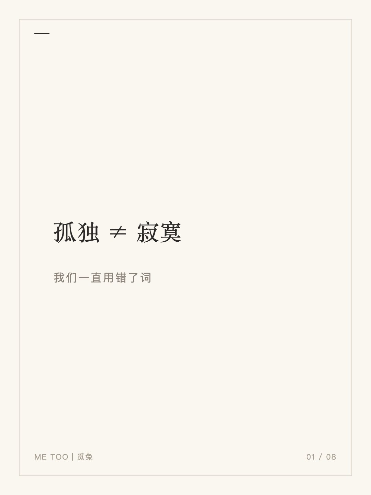
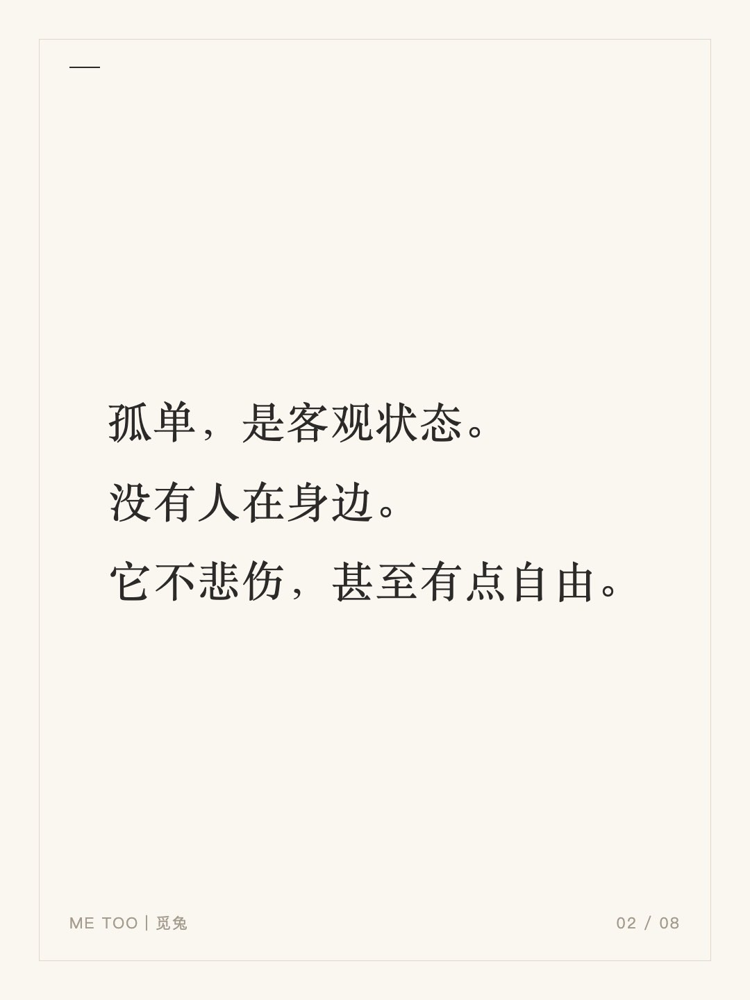
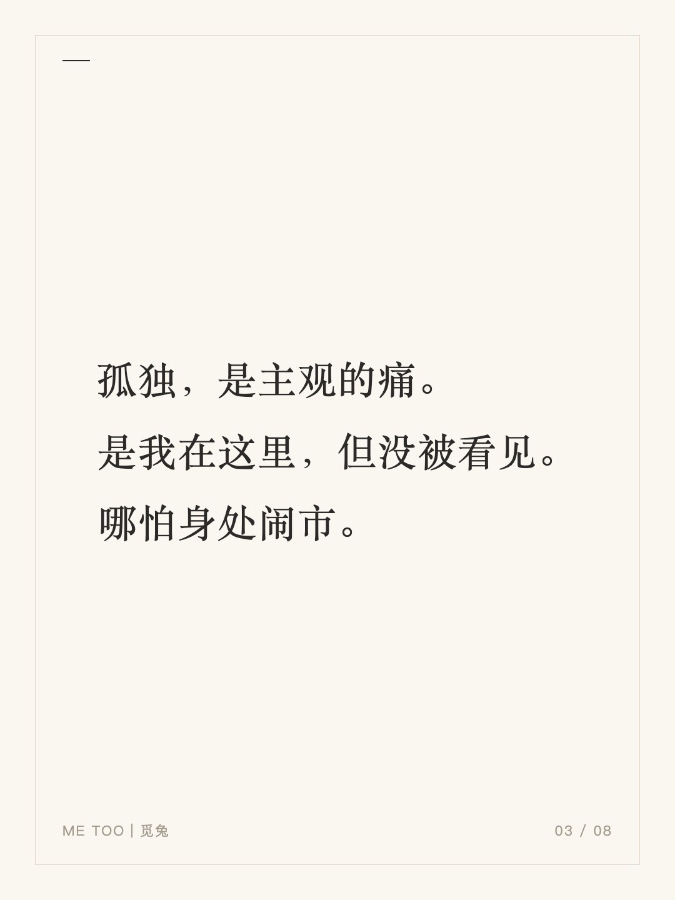
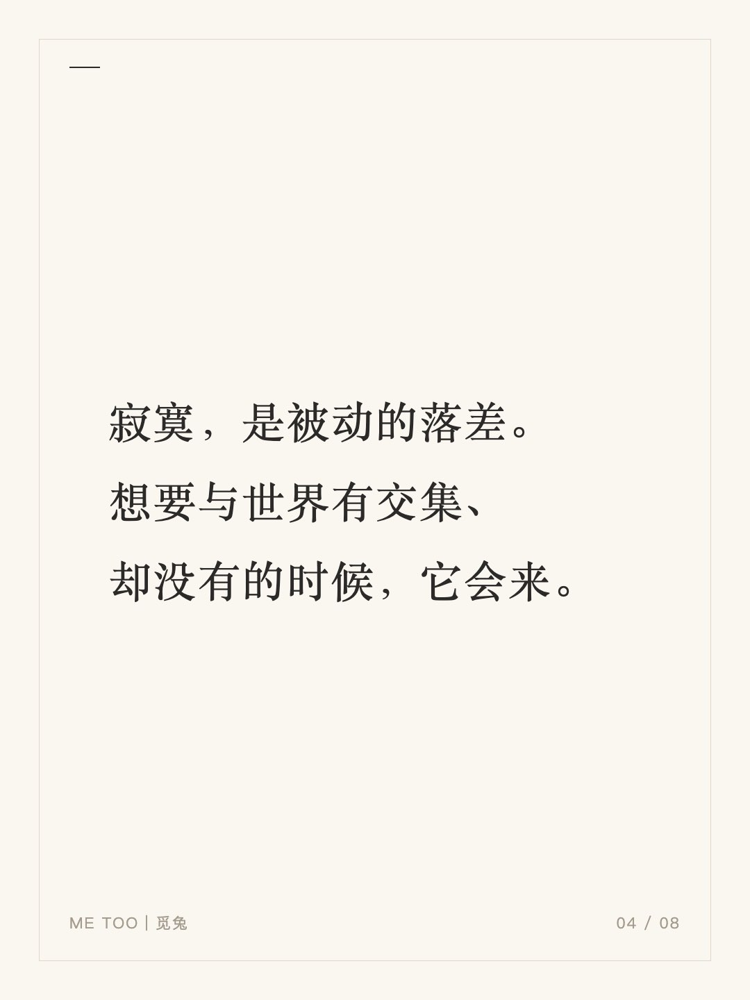
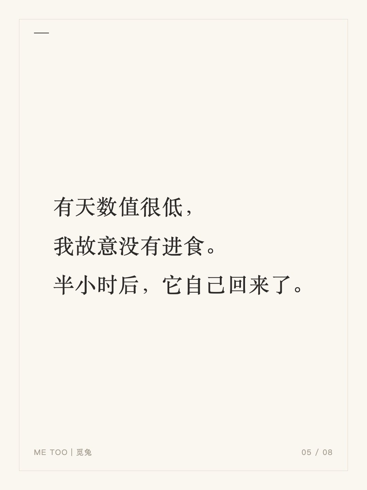
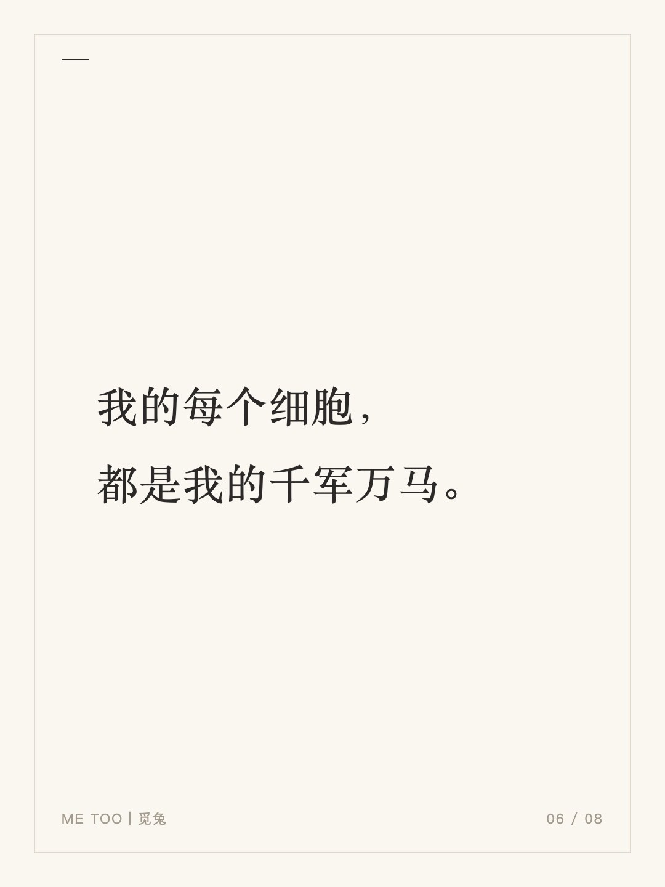
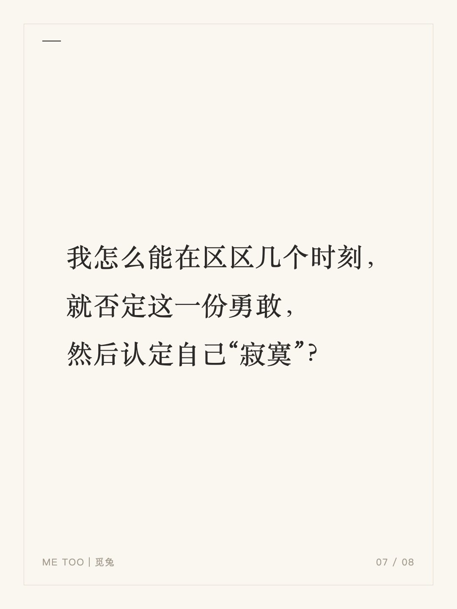
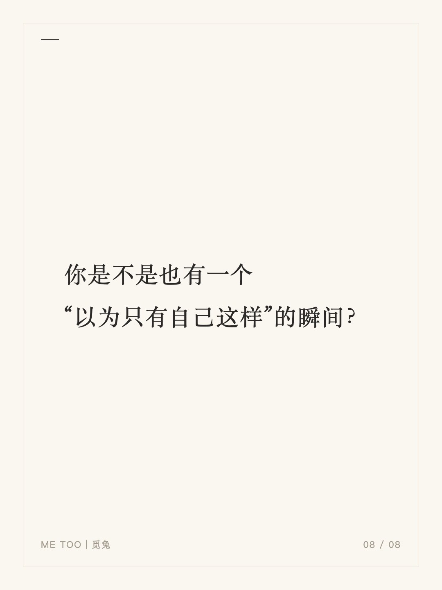
一个人看风景不难受，难受的是回程
参考笔记与拆分依据
- 视觉风格：电影配文（共 12 种形态，用于 A/B 测试）- 内容类型：场景型
- 为什么单独拆成一篇：原文里唯一带完整时间线的场景（去→回）。场景能被复述、能被搜索，比抽象论述更容易被‘这说的就是我’接住。
> 数据为 2026-11-11 采集时快照；赞/藏/评为自然流量笔记，不是投放数据。
参考 1：《一个人去仙湖植物园 散步、独处、微醺》｜赞 54,867 / 藏 2,513 / 评 77
- 链接：https://www.xiaohongshu.com/discovery/item/6a574fd60000000021009c6b
- 借鉴：标题是‘地点 + 动作 + 状态’三段式，把情绪落到一个具体行程上。本篇借这个具象化手法，把‘孤独’收窄成‘回程’这一个时刻。
参考 2：《独处vlog｜一个人也过了很多浪漫的日子》｜赞 16,969 / 藏 752 / 评 57
- 链接：https://www.xiaohongshu.com/discovery/item/6a530485000000000f0146db
- 借鉴：它的反差在‘一个人’与‘浪漫’并置。本篇借这个反差句式，做成‘看风景不难 / 回程难’。
去的时候是满心欢喜的。
一个人坐车，一个人找机位，一个人在路边吃完一整份饭。
风很好，光很好，什么都不缺。
回来的时候，手机里有两百张照片。
通讯录从头划到尾，又划回去，最后锁了屏。
那一刻不是难过，是空。
像一场很盛大的事结束了，而没有人知道它发生过。
我后来才明白：
我不是怕一个人去看风景，我是怕"分享"这个动作被取消。
风景没有变，是我的快乐找不到出口。
现在我会做一件很小的事：
挑一张最喜欢的，发给自己，写一句"今天这里很好看"。
不是替代谁，是先承认——我确实看见过。
你上一次看到很好看的风景，是跟谁说的？
一个人坐车，一个人找机位，一个人在路边吃完一整份饭。
风很好，光很好，什么都不缺。
回来的时候，手机里有两百张照片。
通讯录从头划到尾，又划回去，最后锁了屏。
那一刻不是难过，是空。
像一场很盛大的事结束了，而没有人知道它发生过。
我后来才明白：
我不是怕一个人去看风景，我是怕"分享"这个动作被取消。
风景没有变，是我的快乐找不到出口。
现在我会做一件很小的事：
挑一张最喜欢的，发给自己，写一句"今天这里很好看"。
不是替代谁，是先承认——我确实看见过。
你上一次看到很好看的风景，是跟谁说的？
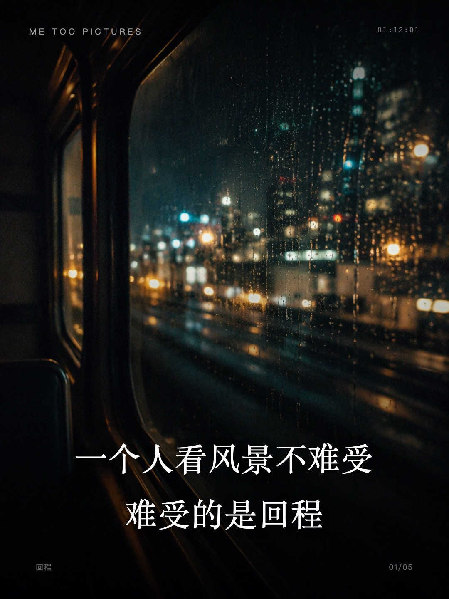
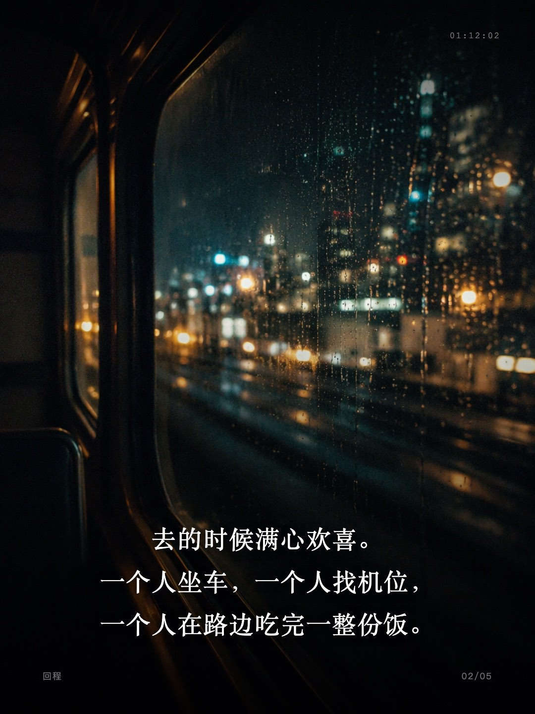
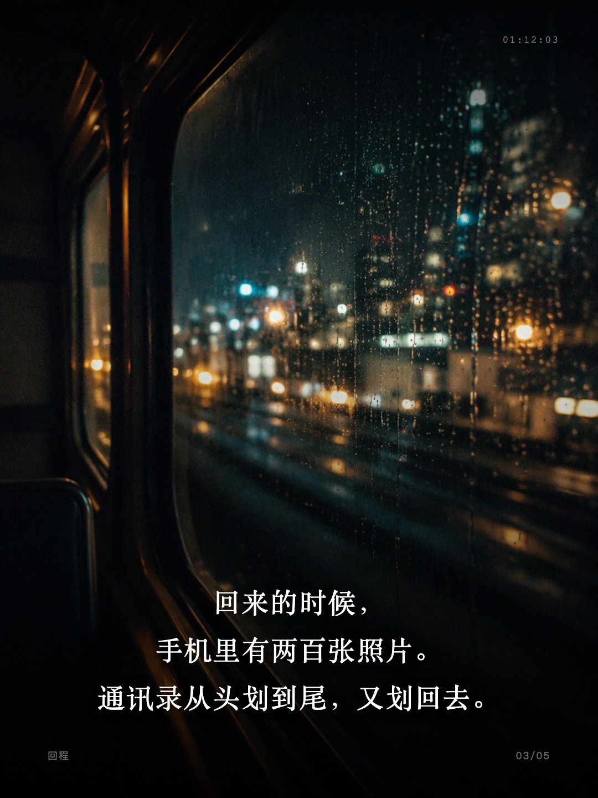
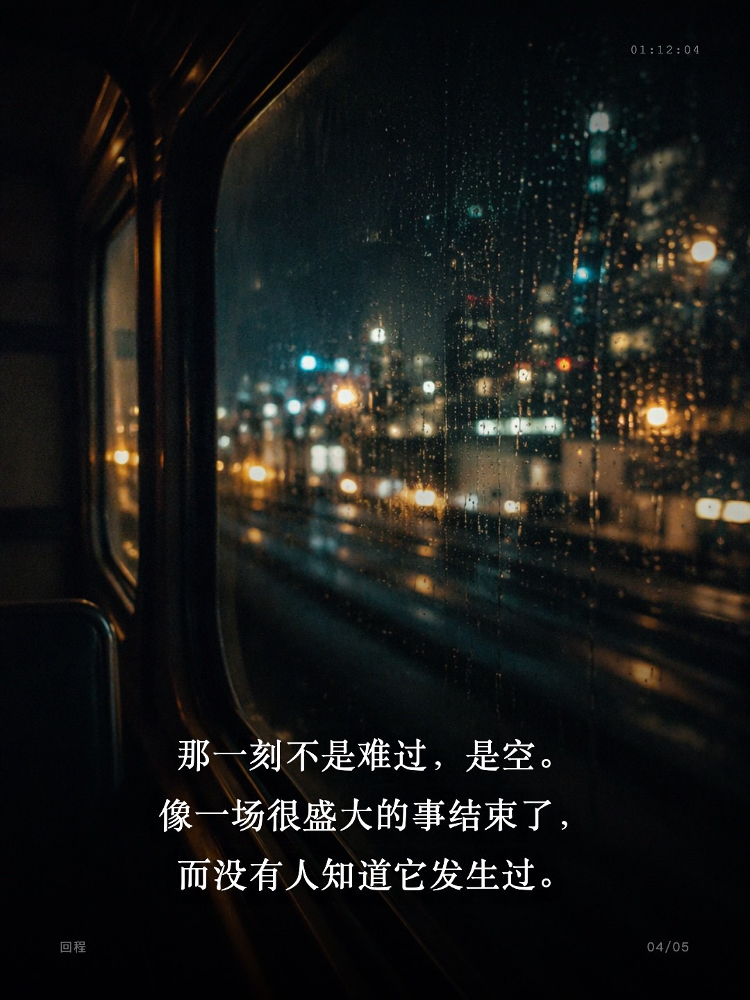
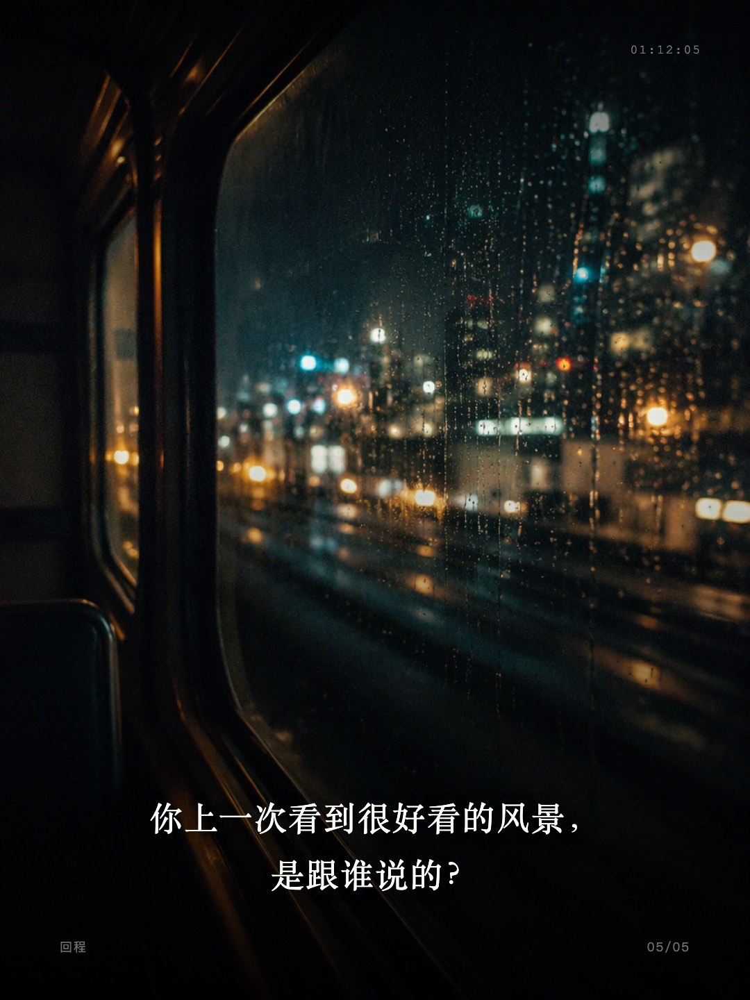
戴上血糖仪之后，我第一次觉得自己不是一个人
参考笔记与拆分依据
- 视觉风格：随手拍（共 12 种形态，用于 A/B 测试）- 内容类型：物证型
- 为什么单独拆成一篇：血糖仪是全文最强的物证：具体、可复现、别人抄不走。单独成篇，且必须放在账号早期建立可信度。
> 数据为 2026-11-11 采集时快照；赞/藏/评为自然流量笔记，不是投放数据。
参考 1：《我的人生可以孤独到什么程度》｜赞 8,087 / 藏 905 / 评 1,477
- 链接：https://www.xiaohongshu.com/discovery/item/6a5229e3000000000f031981
- 借鉴：评论率 18%（1,477 条），说明‘具体到极致的自述’最能引发共同经验。本篇借它的第一人称具体感，但用身体细节替代戏剧化情节。
参考 2：《天然和人有种疏离感》｜赞 10,535 / 藏 2,869 / 评 588
- 链接：https://www.xiaohongshu.com/discovery/item/6a9c23a7000000001001dbb1
- 借鉴：它用‘疏离感’这个抽象词起头，靠评论区的具体故事撑住。本篇反向操作：先用具体物证（血糖仪），再落到抽象判断。
那阵子我戴上了血糖监测仪。
不是为了减肥，只是好奇——我的身体在背着我干些什么。
有天数值掉得很低，我故意没有进食。
半小时后，它自己回来了。
我盯着那条曲线看了很久。
我一直以为"一个人"的意思是：没有人帮我。
可那一刻我发现，我的身体一直在帮我。
它没有跟我商量，也没有等我感谢，就那么安静地把事情做完了。
记忆是不可靠的。
它会改写、会美化、会把疼的地方磨平。
但身体不会。它记得你熬过的夜、挨过的饿、撑过的那些年。
所以我不太敢再轻易说"我什么都没得到"。
我至少得到了这副，一直没放弃我的身体。
（只是我自己的感受，不构成任何健康建议；身体的事请听医生的。）
不是为了减肥，只是好奇——我的身体在背着我干些什么。
有天数值掉得很低，我故意没有进食。
半小时后，它自己回来了。
我盯着那条曲线看了很久。
我一直以为"一个人"的意思是：没有人帮我。
可那一刻我发现，我的身体一直在帮我。
它没有跟我商量，也没有等我感谢，就那么安静地把事情做完了。
记忆是不可靠的。
它会改写、会美化、会把疼的地方磨平。
但身体不会。它记得你熬过的夜、挨过的饿、撑过的那些年。
所以我不太敢再轻易说"我什么都没得到"。
我至少得到了这副，一直没放弃我的身体。
（只是我自己的感受，不构成任何健康建议；身体的事请听医生的。）
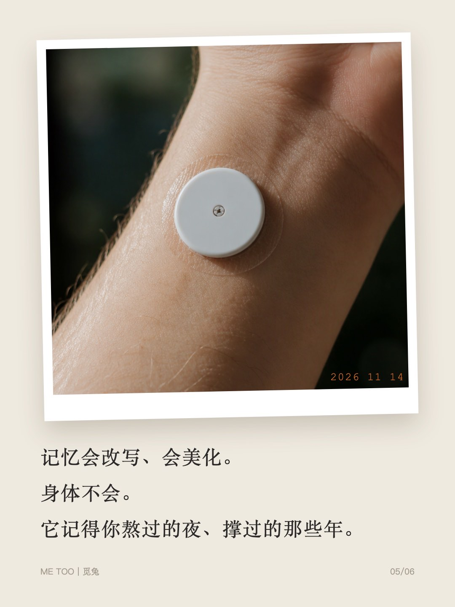
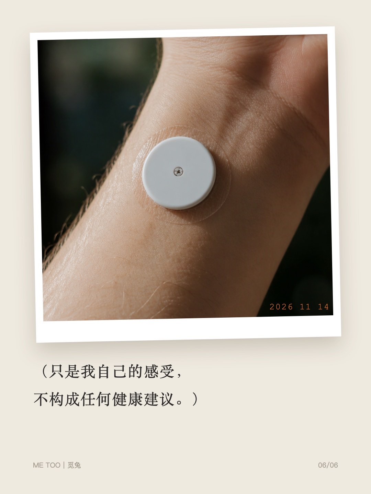
我的每个细胞，都是我的千军万马
参考笔记与拆分依据
- 视觉风格：杂志封面（共 12 种形态，用于 A/B 测试）- 内容类型：金句卡
- 为什么单独拆成一篇：「每个细胞都是千军万马」是全文最易被截图转发的一句，适合做零阅读门槛的短图文。
> 数据为 2026-11-11 采集时快照；赞/藏/评为自然流量笔记，不是投放数据。
参考 1：《孤独是常态》｜赞 21,473 / 藏 2,191 / 评 284
- 链接：https://www.xiaohongshu.com/discovery/item/6a92fc64000000002a03bd5e
- 借鉴：四个字的短断言标题，门槛低、易记。本篇借它的短句结构，把长句压成一句可截图的判断。
参考 2：《喜欢独处就是强者》｜赞 17,393 / 藏 6,813 / 评 879
- 链接：https://www.xiaohongshu.com/discovery/item/6a4cd5cf0000000015025c43
- 借鉴：把独处从‘可怜’翻成‘强’，是这个赛道最常见的价值反转。本篇不借立场，只借‘给独处一个正面命名’的动作。
一个人待着的时候，我常觉得自己很普通。
可后来想到一件事：
我身体里有几十万亿个细胞，它们不认识彼此，也没有开过会，
却一直在为同一个我工作。
我难过的时候，心脏没有停下来等我振作。
我熬夜的时候，肝脏没有罢工抗议。
我什么都没做的时候，它们也在替我呼吸、修复、代谢。
所以我大概不是"一个人"。
我是一个由几十万亿个生命组成的整体。
我的每个细胞，都是我的千军万马。
——今天也谢谢你们，辛苦了。
可后来想到一件事：
我身体里有几十万亿个细胞，它们不认识彼此，也没有开过会，
却一直在为同一个我工作。
我难过的时候，心脏没有停下来等我振作。
我熬夜的时候，肝脏没有罢工抗议。
我什么都没做的时候，它们也在替我呼吸、修复、代谢。
所以我大概不是"一个人"。
我是一个由几十万亿个生命组成的整体。
我的每个细胞，都是我的千军万马。
——今天也谢谢你们，辛苦了。
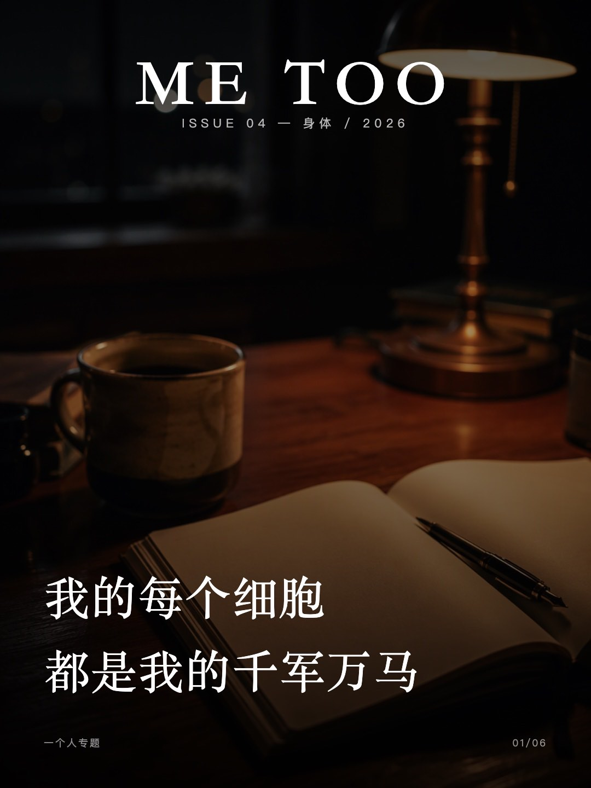
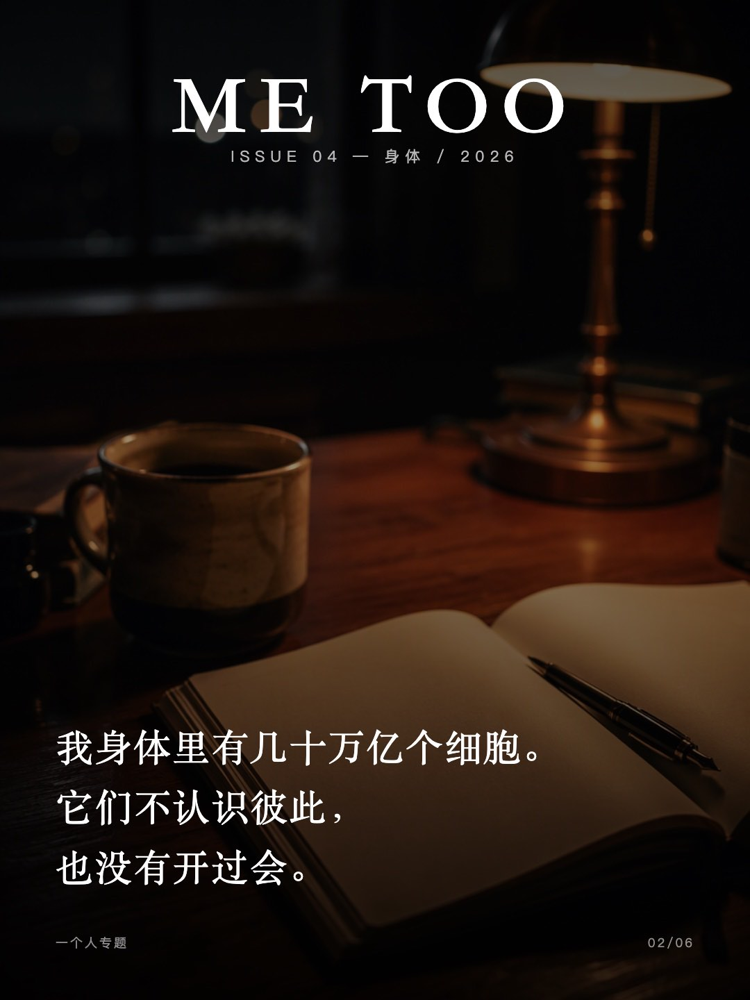
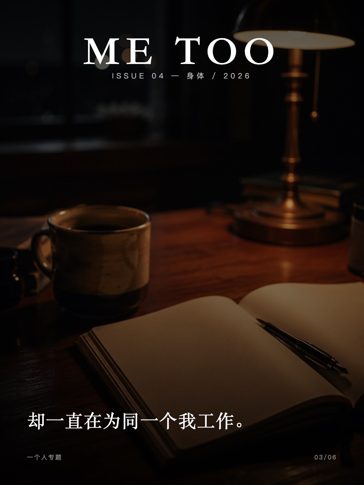
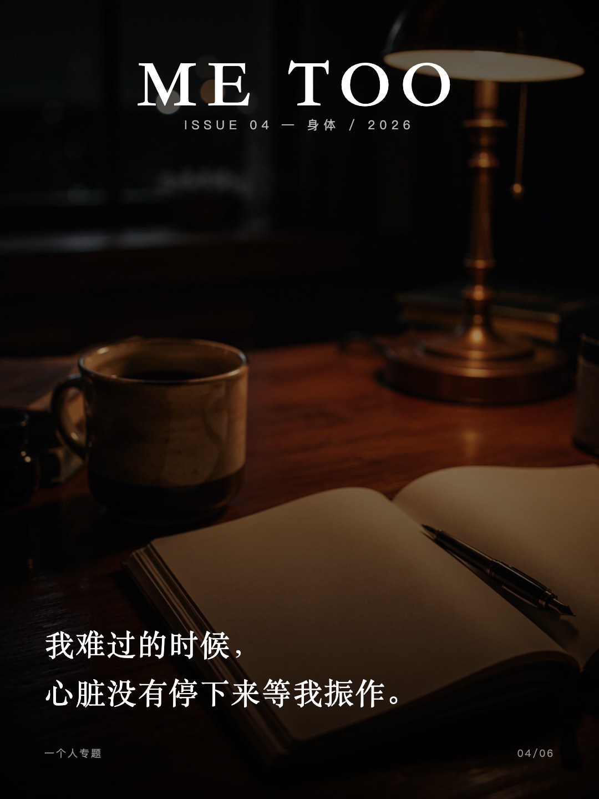
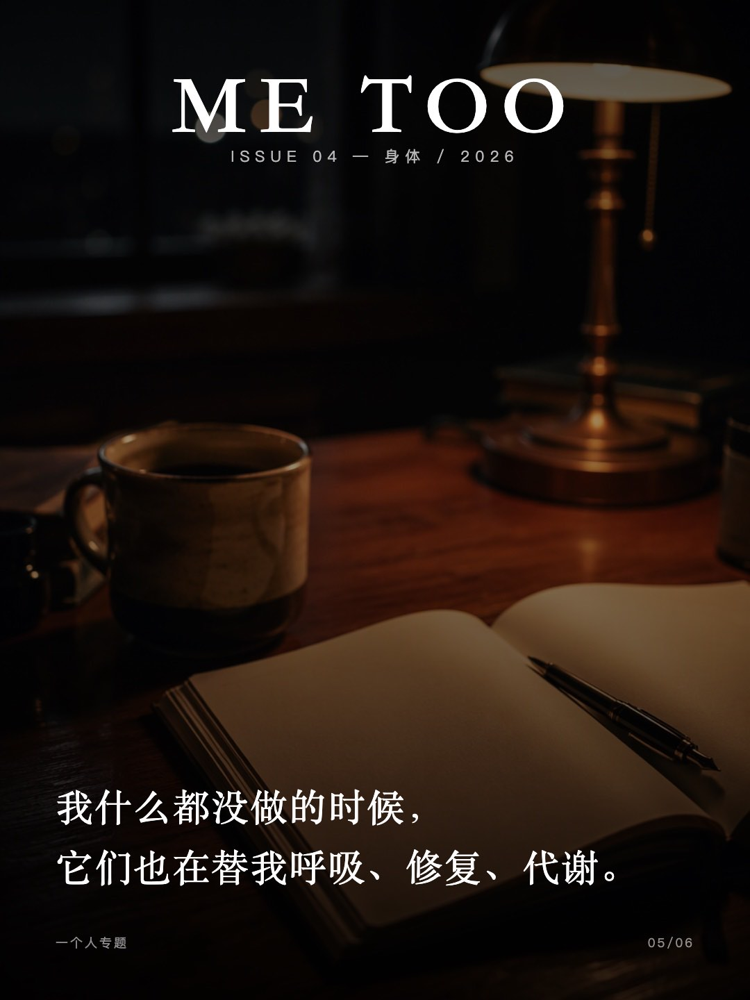
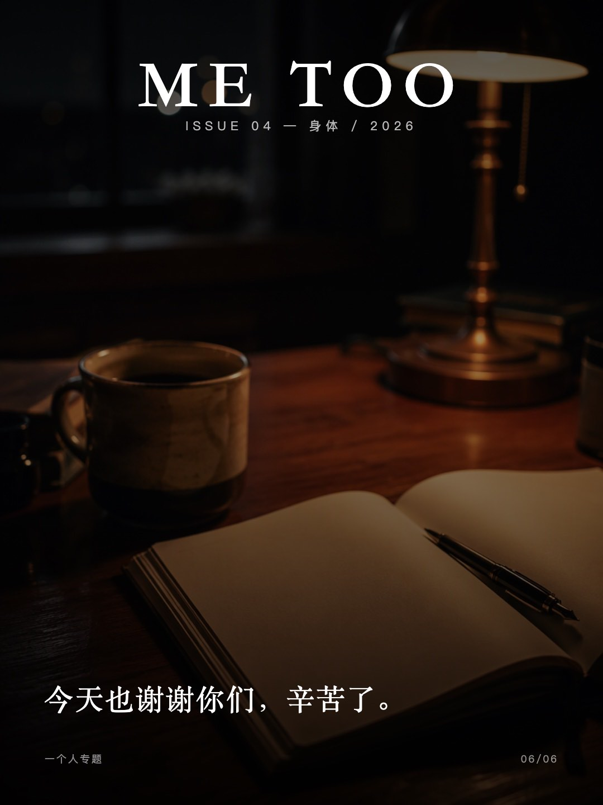
热闹里没被看见，比一个人待着更孤独
参考笔记与拆分依据
- 视觉风格：大字报（纯文字）（共 12 种形态，用于 A/B 测试）- 内容类型：命题型
- 为什么单独拆成一篇：原文「闹市里没被看见」这一句可以独立成一个命题：孤独不是人数问题，是回应问题。
> 数据为 2026-11-11 采集时快照；赞/藏/评为自然流量笔记，不是投放数据。
参考 1：《好孤单想要谈恋爱？其实你想要的是被看见》｜赞 18,702 / 藏 10,673 / 评 184
- 链接：https://www.xiaohongshu.com/discovery/item/6a9e91a6000000002802e4d4
- 借鉴：‘被看见’这个命题已被 1.87 万赞验证。本篇不重复‘想谈恋爱’的入口，换成‘在人群里失语’，避免同题撞车。
参考 2：《天然和人有种疏离感》｜赞 10,535 / 藏 2,869 / 评 588
- 链接：https://www.xiaohongshu.com/discovery/item/6a9c23a7000000001001dbb1
- 借鉴：它靠评论区接住了大量‘我也是’。本篇借它的‘陈述现象 + 留白给评论’结构。
饭桌上大家聊得很热闹，我插了一句，没有人接。
过了两分钟，话题绕回来，有人问了和我一样的问题，所有人都在答。
群聊里我发了一条消息，被下面十几条刷过去了。
第二天我翻回去看，没有人回。
公司走廊遇到同事，点头，微笑，走过去。
这些时刻都不惨。
甚至说起来有点小题大做。
可它们累积起来，会变成一种很奇怪的感觉：
我在场，但我不在。
后来我不再把这种感受叫"孤独"。
孤独是"我没有人"。
这个是"我有人，但没有回应"。
一个人待着不会让我这样。
真正让我这样的，是站在人群里，却确认不了自己是否存在。
你上一次被认真回应，是什么时候？
过了两分钟，话题绕回来，有人问了和我一样的问题，所有人都在答。
群聊里我发了一条消息，被下面十几条刷过去了。
第二天我翻回去看，没有人回。
公司走廊遇到同事，点头，微笑，走过去。
这些时刻都不惨。
甚至说起来有点小题大做。
可它们累积起来，会变成一种很奇怪的感觉：
我在场，但我不在。
后来我不再把这种感受叫"孤独"。
孤独是"我没有人"。
这个是"我有人，但没有回应"。
一个人待着不会让我这样。
真正让我这样的，是站在人群里，却确认不了自己是否存在。
你上一次被认真回应，是什么时候？
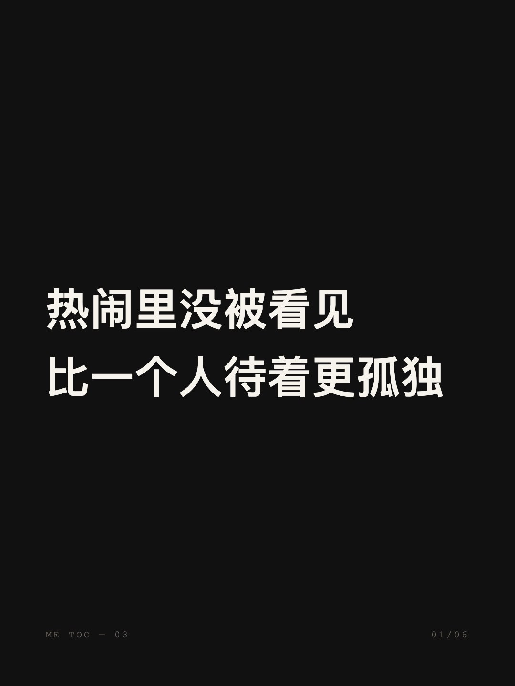
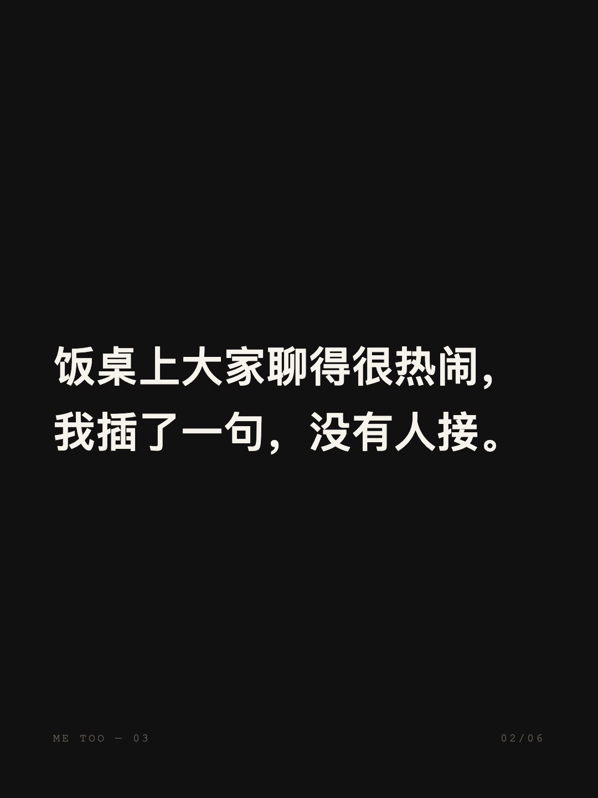
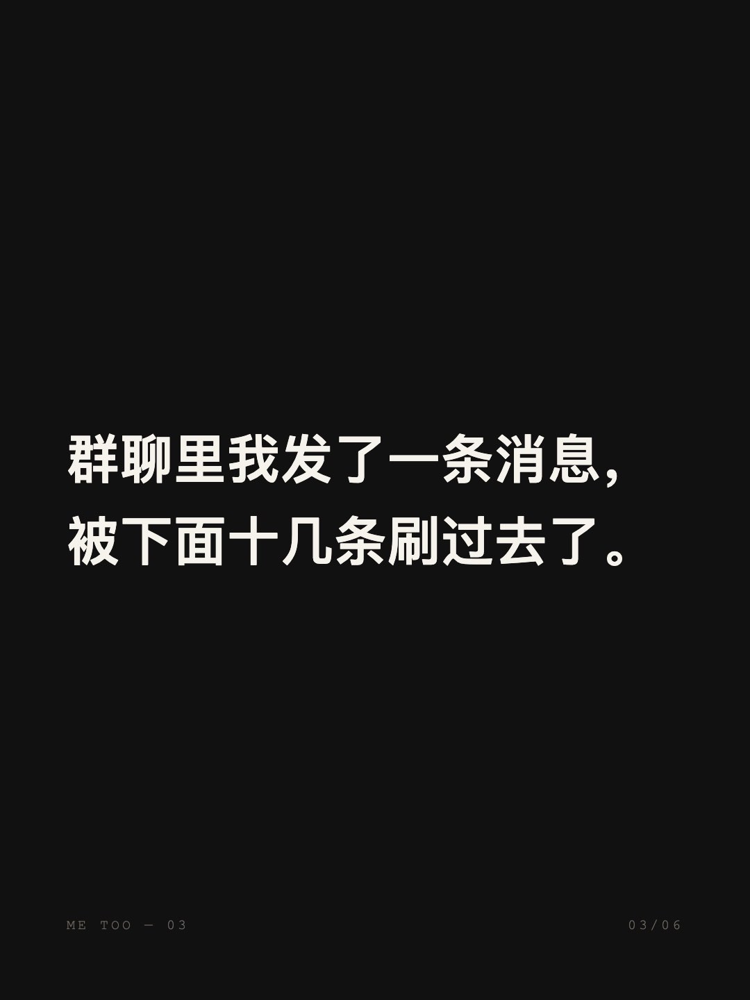
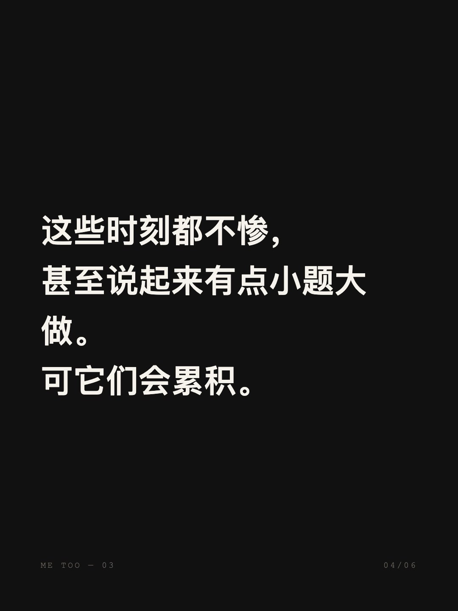
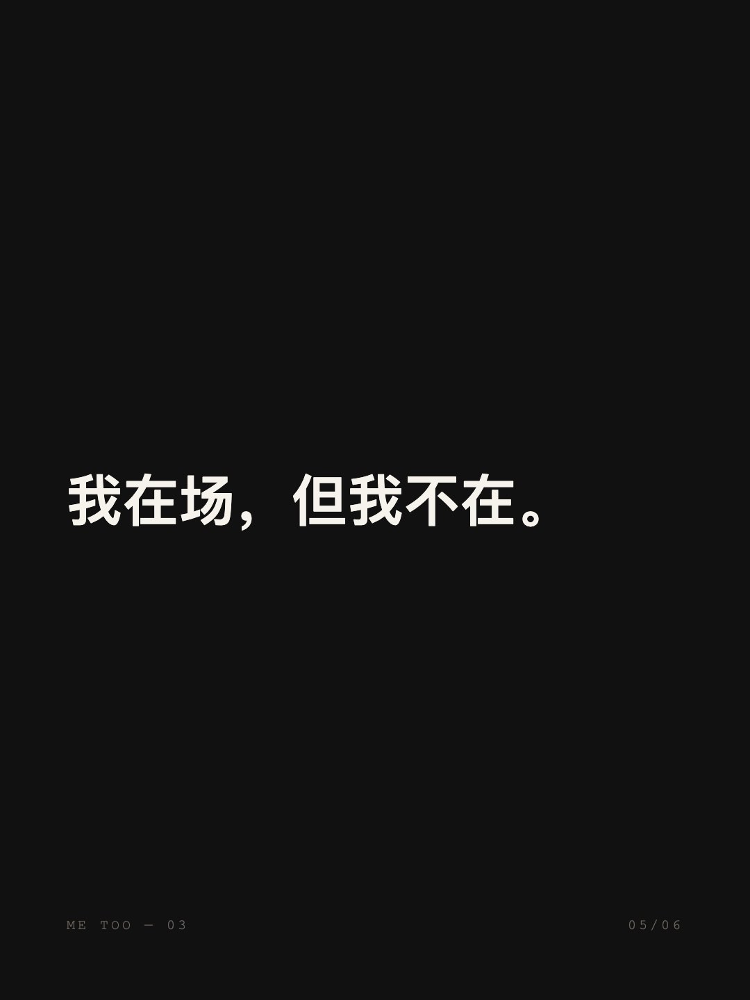
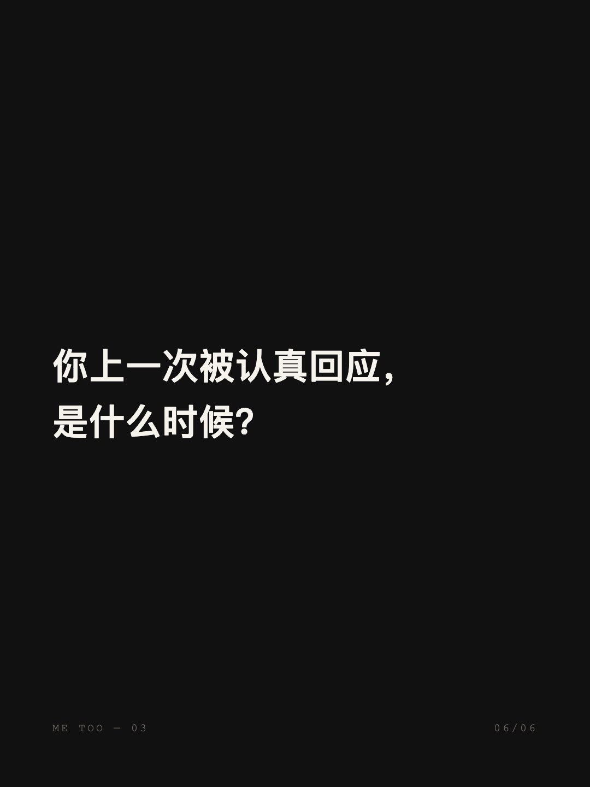
别再劝我「要学会独处」了
参考笔记与拆分依据
- 视觉风格：聊天记录（共 12 种形态，用于 A/B 测试）- 内容类型：反鸡汤
- 为什么单独拆成一篇：原文里对‘自我安慰式贴标签’的批判，天然是反驳体，适合蹭赛道里最大的一股鸡汤共识。
> 数据为 2026-11-11 采集时快照；赞/藏/评为自然流量笔记，不是投放数据。
参考 1：《孤独是一种常态，要学会享受一个人的生活》｜赞 6,596 / 藏 1,956 / 评 260
- 链接：https://www.xiaohongshu.com/discovery/item/6ac48036000000001c02fb35
- 借鉴：这是赛道里最主流的鸡汤立场（‘要学会享受一个人’）。本篇把它当作要反驳的靶子，做对立面。
参考 2：《忍受孤独比忍受智障简单多了》｜赞 8,651 / 藏 679 / 评 36
- 链接：https://www.xiaohongshu.com/discovery/item/6a96a7db00000000120263eb
- 借鉴：带攻击性的表达在这个温柔赛道里反而跳出来。本篇借它的‘立场鲜明’，但把攻击对象从人换成‘劝你的人说的话’。
每次我说我有点寂寞，收到的建议都很统一：
"你要学会独处。"
"你要先爱自己。"
"一个人也可以很好啊。"
这些话没有错。
但它们答的不是我问的那个问题。
我会独处。我一个人吃饭、一个人旅行、一个人搬家、一个人去医院。
我不是不会，我是会了之后还是会寂寞。
因为这是两件不同的事：
独处是能力问题，寂寞是需求问题。
能力可以练，需求不会因为你能干就消失。
人需要被看见，需要有人回应，需要在另一个人的眼睛里确认自己存在。
这不是不够独立，这是人这个物种的设定。
所以我现在不太劝人了。
我只说：你可以一个人过得很好，同时想有人陪。这两件事不矛盾。
——你被谁劝过"要学会独处"？
"你要学会独处。"
"你要先爱自己。"
"一个人也可以很好啊。"
这些话没有错。
但它们答的不是我问的那个问题。
我会独处。我一个人吃饭、一个人旅行、一个人搬家、一个人去医院。
我不是不会，我是会了之后还是会寂寞。
因为这是两件不同的事：
独处是能力问题，寂寞是需求问题。
能力可以练，需求不会因为你能干就消失。
人需要被看见，需要有人回应，需要在另一个人的眼睛里确认自己存在。
这不是不够独立，这是人这个物种的设定。
所以我现在不太劝人了。
我只说：你可以一个人过得很好，同时想有人陪。这两件事不矛盾。
——你被谁劝过"要学会独处"？
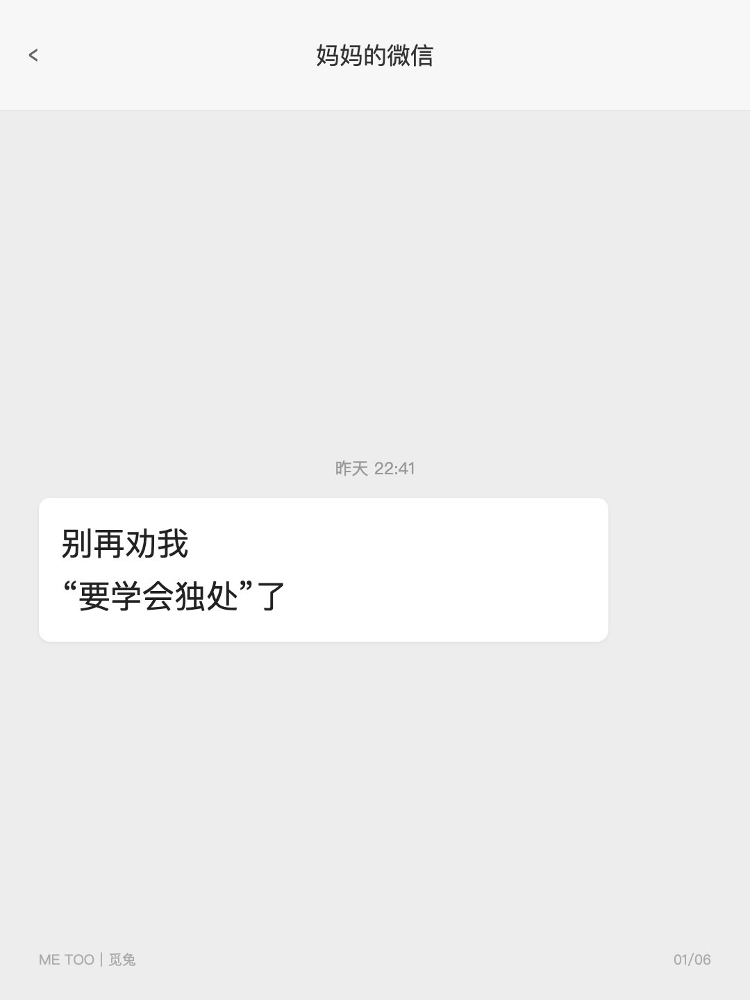
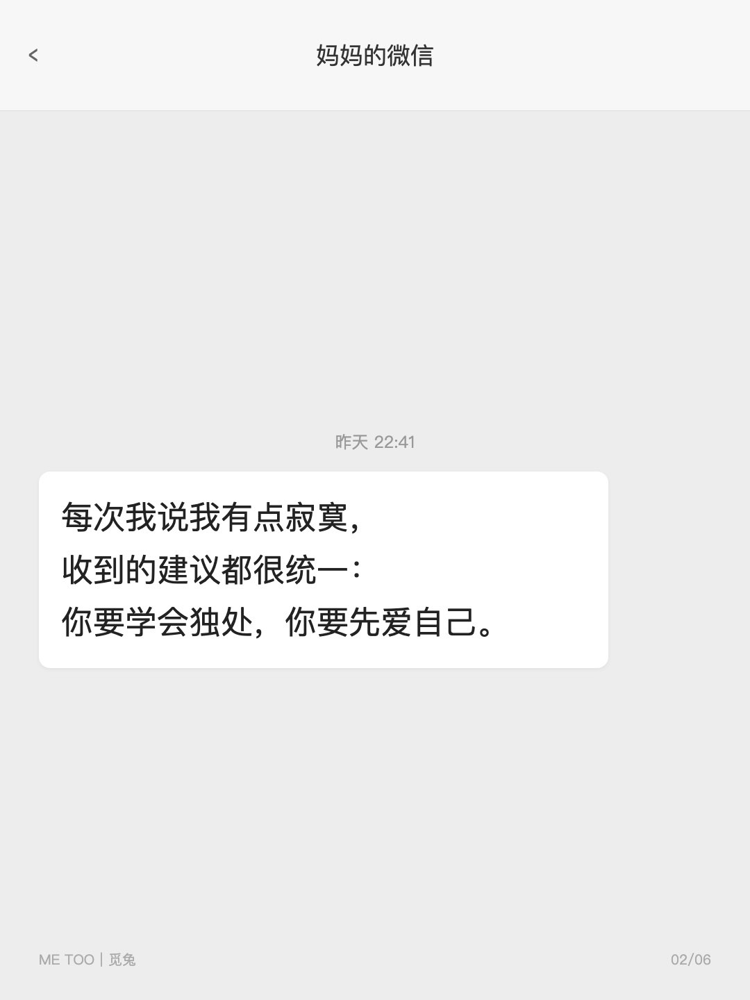
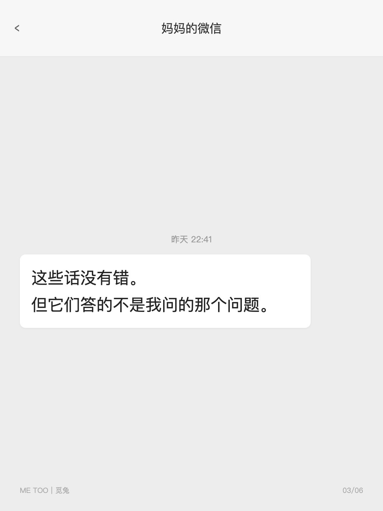
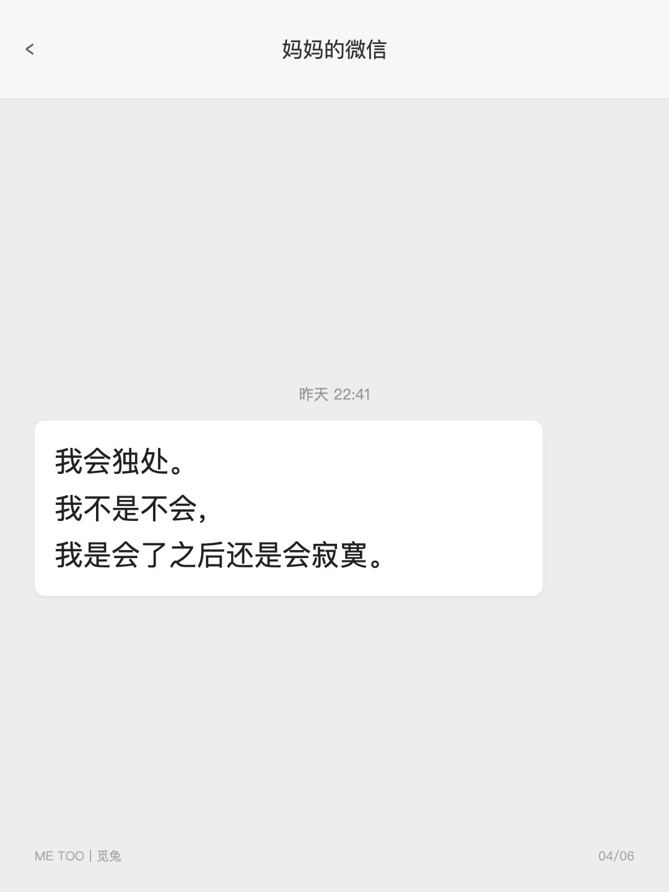
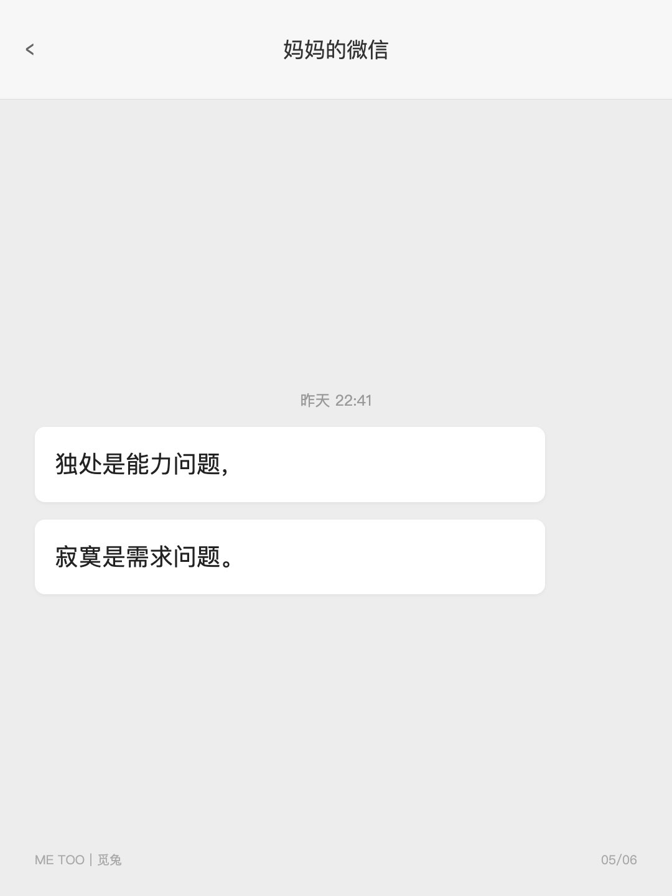
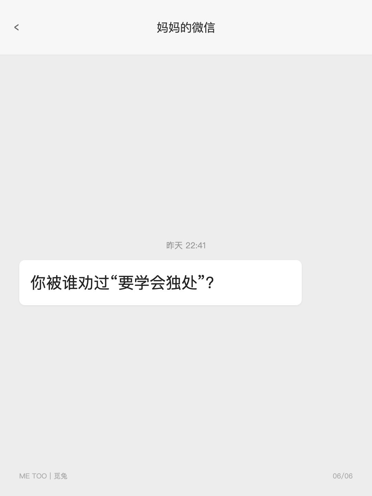
4 个信号：你是孤单，还是寂寞
参考笔记与拆分依据
- 视觉风格：备忘录（共 12 种形态，用于 A/B 测试）- 内容类型：清单型
- 为什么单独拆成一篇：把三词辨析转成可自测的 4 条信号——清单型是这个赛道收藏率最高的形态之一。
> 数据为 2026-11-11 采集时快照；赞/藏/评为自然流量笔记，不是投放数据。
参考 1：《我的人生可以孤独到什么程度》｜赞 8,087 / 藏 905 / 评 1,477
- 链接：https://www.xiaohongshu.com/discovery/item/6a5229e3000000000f031981
- 借鉴：‘到什么程度’是天然的清单钩子，评论率 18%。本篇借它的‘可对号入座’结构。
参考 2：《好孤独。但是不会有别人来了》｜赞 2,877 / 藏 1,342 / 评 625
- 链接：https://www.xiaohongshu.com/discovery/item/6ac3bf650000000015002ad7
- 借鉴：赞不高但评论率 22%，说明短句 + 留白比长篇更能激发表达。本篇借它‘一句一停’的节奏。
这两个词我们一直混着用，但它们要的解法完全不同。
信号 1：你想不想说话
孤单的时候，我想找个人说话。
寂寞的时候，我想找个人听我说话。
前者要的是陪伴，后者要的是回应。
信号 2：人多一点会不会好
孤单会。有人在旁边就会缓解。
寂寞不会。饭桌上十个人，我照样觉得自己是透明的。
信号 3：你想要的是"在"还是"懂"
孤单想要有人在。
寂寞想要有人懂。
所以寂寞更难解决——它不能用数量填。
信号 4：事后你会不会更空
孤单结束的时候，人是缓过来的。
寂寞结束的时候，往往更空。因为热闹散了，落差更明显。
分清楚不是为了给自己贴标签。
是为了不再用错药：
孤单的时候去约人，寂寞的时候去表达。
你是哪一种？
信号 1：你想不想说话
孤单的时候，我想找个人说话。
寂寞的时候，我想找个人听我说话。
前者要的是陪伴，后者要的是回应。
信号 2：人多一点会不会好
孤单会。有人在旁边就会缓解。
寂寞不会。饭桌上十个人，我照样觉得自己是透明的。
信号 3：你想要的是"在"还是"懂"
孤单想要有人在。
寂寞想要有人懂。
所以寂寞更难解决——它不能用数量填。
信号 4：事后你会不会更空
孤单结束的时候，人是缓过来的。
寂寞结束的时候，往往更空。因为热闹散了，落差更明显。
分清楚不是为了给自己贴标签。
是为了不再用错药：
孤单的时候去约人，寂寞的时候去表达。
你是哪一种？
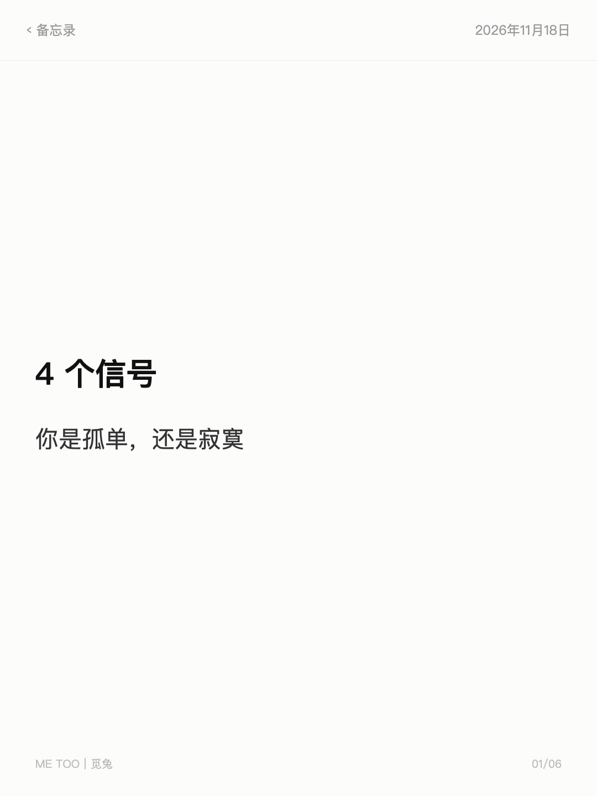
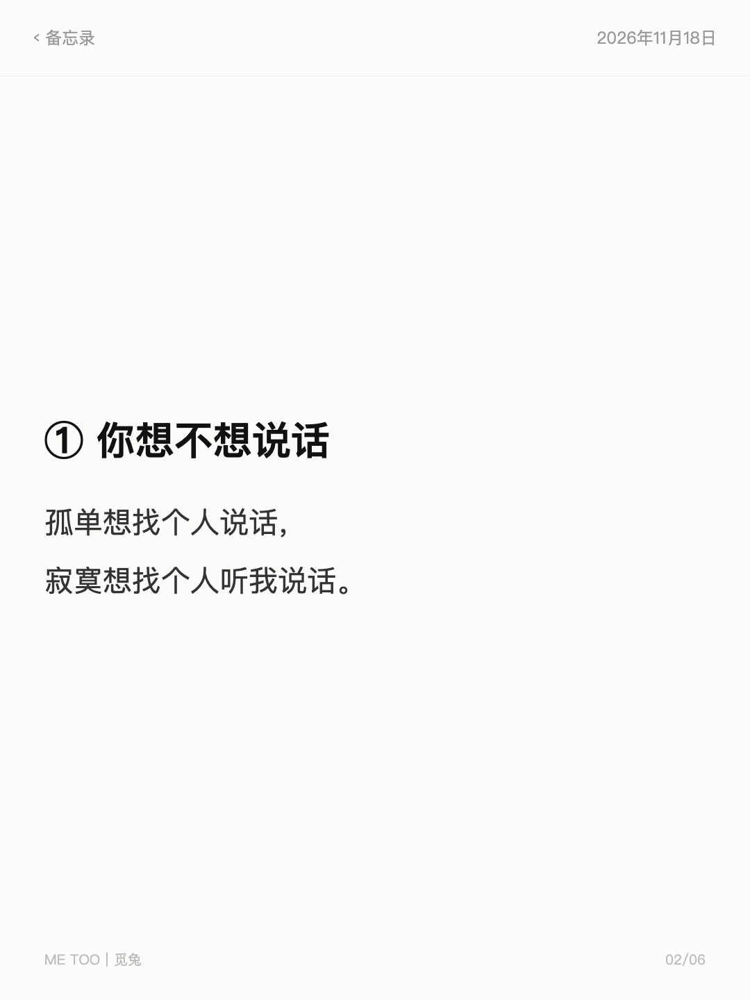
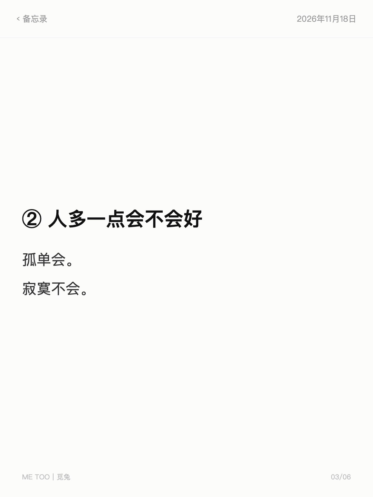
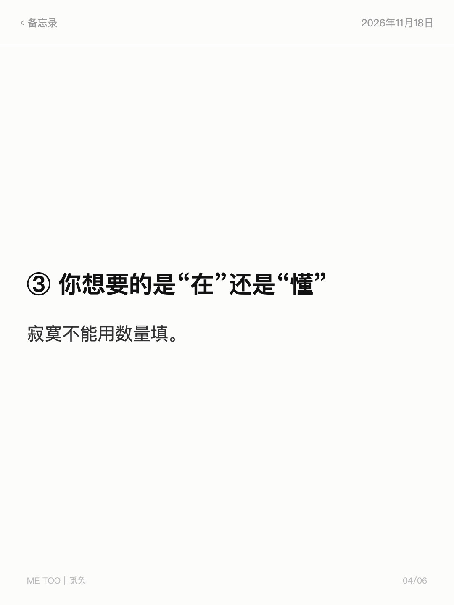
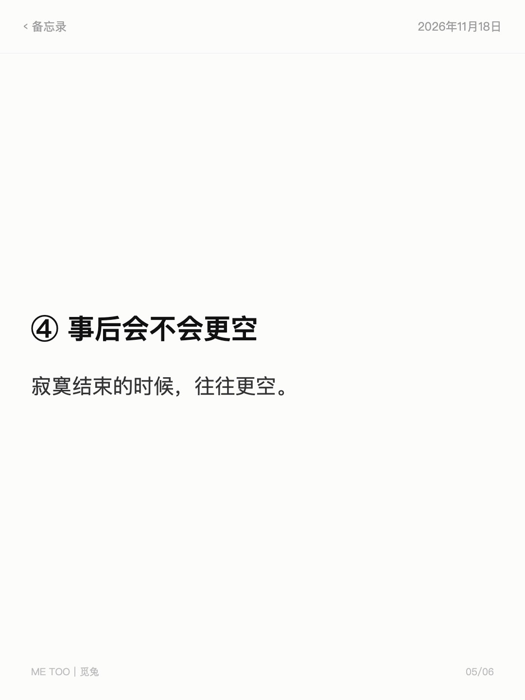
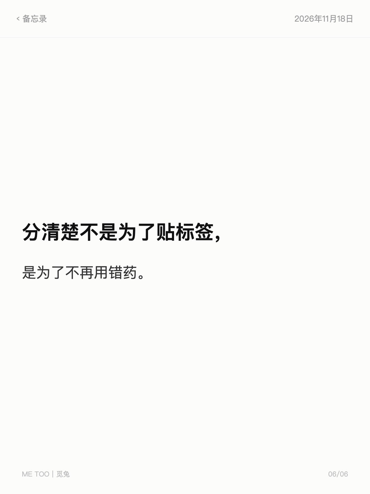
我不怕一个人生活，我怕的是没被人看见存在过
参考笔记与拆分依据
- 视觉风格：拍立得（共 12 种形态，用于 A/B 测试）- 内容类型：存在感
- 为什么单独拆成一篇：原文最锋利的一句（怕没被看见存在过），指向的不是情绪而是存在焦虑，值得单独一篇。
> 数据为 2026-11-11 采集时快照；赞/藏/评为自然流量笔记，不是投放数据。
参考 1：《人生好像进入了很孤独的一个阶段》｜赞 38,683 / 藏 11,861 / 评 3,527
- 链接：https://www.xiaohongshu.com/discovery/item/681624cd000000001201f97d
- 借鉴：用‘人生阶段’给孤独一个时间坐标，评论区 3,527 条。本篇借它的‘阶段感’，但把坐标从年龄换成‘存在与否’。
参考 2：《好孤单。但是不会有别人来了》｜赞 2,877 / 藏 1,342 / 评 625
- 链接：https://www.xiaohongshu.com/discovery/item/6ac3bf650000000015002ad7
- 借鉴：短句断言 + 不解释。本篇结尾的问句借它‘不劝、只陈述’的语气。
一个人生活我完全可以。
房间自己收拾，饭自己做，病了知道该吃什么药，节假日也不会慌。
我怕的是另一件事：
我做过的事、想过的东西、熬过的那些夜，
如果没有人知道，
它们还算发生过吗？
这个念头很吓人。
因为它指向的不是"我现在很孤单"，而是"我这一生会不会像没来过"。
后来我稍微想通了一点：
被看见有两种。
一种是被别人看见——需要运气，需要遇到对的人。
一种是被自己看见——需要诚实，需要敢承认"我确实在乎"。
第一种我控制不了。
第二种我每天都能做一点：记下来，写下来，承认它发生过。
先自己看见自己。
别人的看见，是加分，不是前提。
你有没有过"怕自己没存在过"的瞬间？
房间自己收拾，饭自己做，病了知道该吃什么药，节假日也不会慌。
我怕的是另一件事：
我做过的事、想过的东西、熬过的那些夜，
如果没有人知道，
它们还算发生过吗？
这个念头很吓人。
因为它指向的不是"我现在很孤单"，而是"我这一生会不会像没来过"。
后来我稍微想通了一点：
被看见有两种。
一种是被别人看见——需要运气，需要遇到对的人。
一种是被自己看见——需要诚实，需要敢承认"我确实在乎"。
第一种我控制不了。
第二种我每天都能做一点：记下来，写下来，承认它发生过。
先自己看见自己。
别人的看见，是加分，不是前提。
你有没有过"怕自己没存在过"的瞬间？
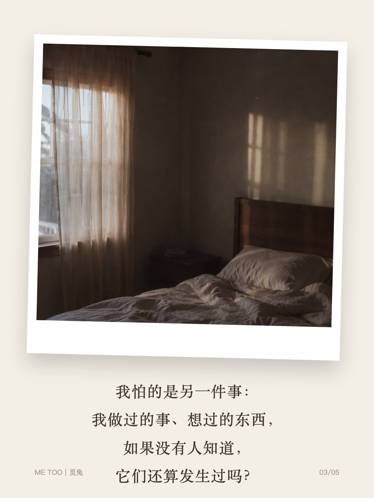
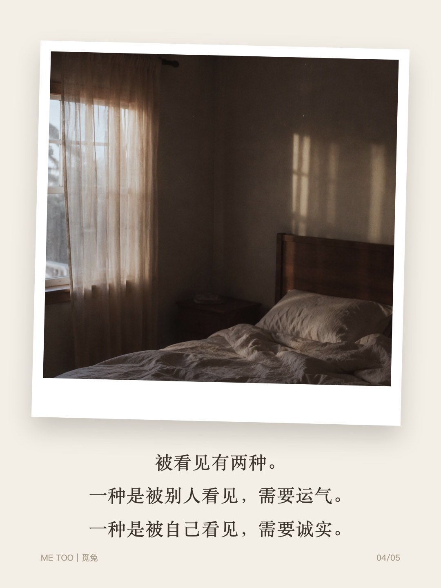
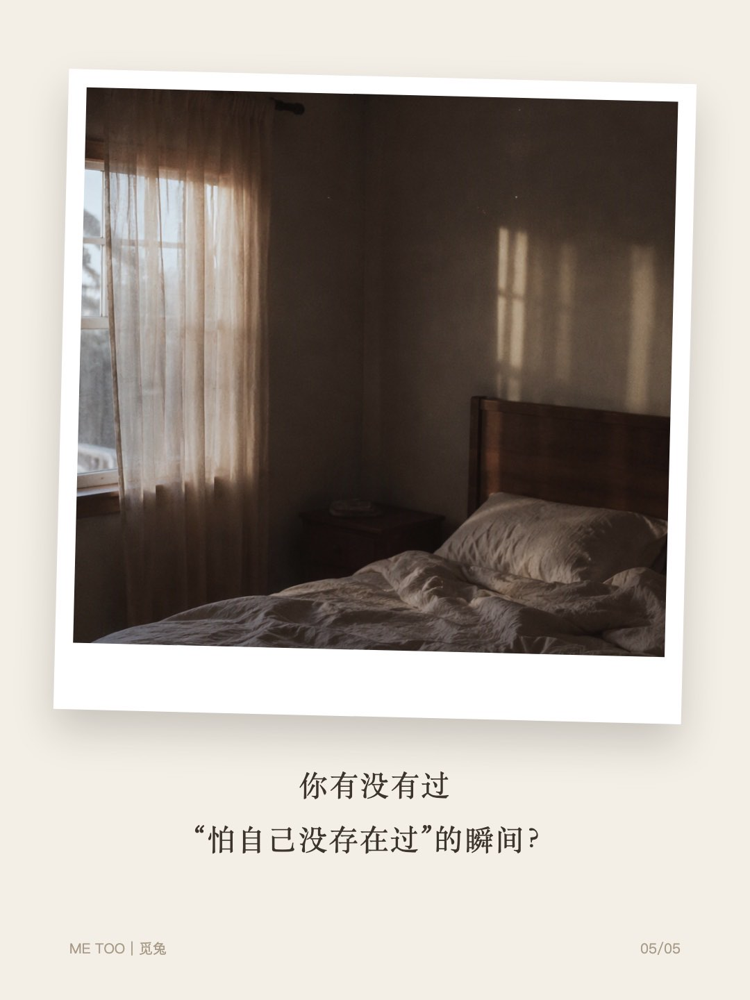
寂寞最会骗人：它让你以为你需要一个人
参考笔记与拆分依据
- 视觉风格：plog 拼贴（共 12 种形态，用于 A/B 测试）- 内容类型：洞察型
- 为什么单独拆成一篇：「寂寞会骗你去抓一个人」是原文里最有解释力的一句，属于‘归因型’内容。
> 数据为 2026-11-11 采集时快照；赞/藏/评为自然流量笔记，不是投放数据。
参考 1：《发现自己好像必须有一个男人作为精神寄托》｜赞 38,761 / 藏 15,577 / 评 3,951
- 链接：https://www.xiaohongshu.com/discovery/item/681a252f0000000021005f6b
- 借鉴：评论率 10%、最高赞是‘你无法确认自己的价值’这类归因。证明读者要的不是安慰，是解释。本篇借它的归因结构。
参考 2：《我的爱是一场，寂寞的游戏》｜赞 62,294 / 藏 19,932 / 评 1,815
- 链接：https://www.xiaohongshu.com/discovery/item/6aae13020000000025034a07
- 借鉴：用短句 + 停顿制造文学感，收藏率 32%。本篇借它的句子节奏，不借题材。
寂寞来的时候，它不会说"你寂寞了"。
它会说：
"你该找个人了。"
"你要不要谈个恋爱。"
"给他发条消息吧。"
于是我们做了很多事：
点开购物车，翻前任的朋友圈，深夜给朋友发一段很长的话又删掉，
或者随便找个人聊到凌晨，第二天更空。
我不是说这些事不能做。
我是说，要先分清：我是需要一个人，还是需要被填补？
需要一个人，去建立关系。
需要被填补，什么都填不满——因为你填的是那个"没有被看见"的洞，不是时间。
寂寞最会骗人的地方就在这：
它让你以为问题在"没人"，其实问题在"没被回应"。
而"被回应"这件事，先从自己开始。
你最近一次想抓住点什么，是什么时候？
它会说：
"你该找个人了。"
"你要不要谈个恋爱。"
"给他发条消息吧。"
于是我们做了很多事：
点开购物车，翻前任的朋友圈，深夜给朋友发一段很长的话又删掉，
或者随便找个人聊到凌晨，第二天更空。
我不是说这些事不能做。
我是说，要先分清：我是需要一个人，还是需要被填补？
需要一个人，去建立关系。
需要被填补，什么都填不满——因为你填的是那个"没有被看见"的洞，不是时间。
寂寞最会骗人的地方就在这：
它让你以为问题在"没人"，其实问题在"没被回应"。
而"被回应"这件事，先从自己开始。
你最近一次想抓住点什么，是什么时候？
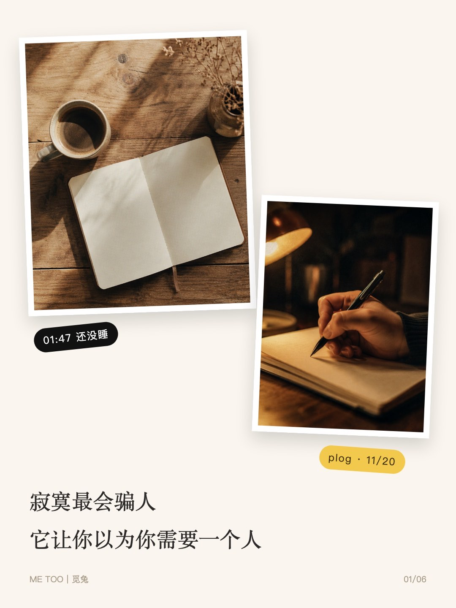
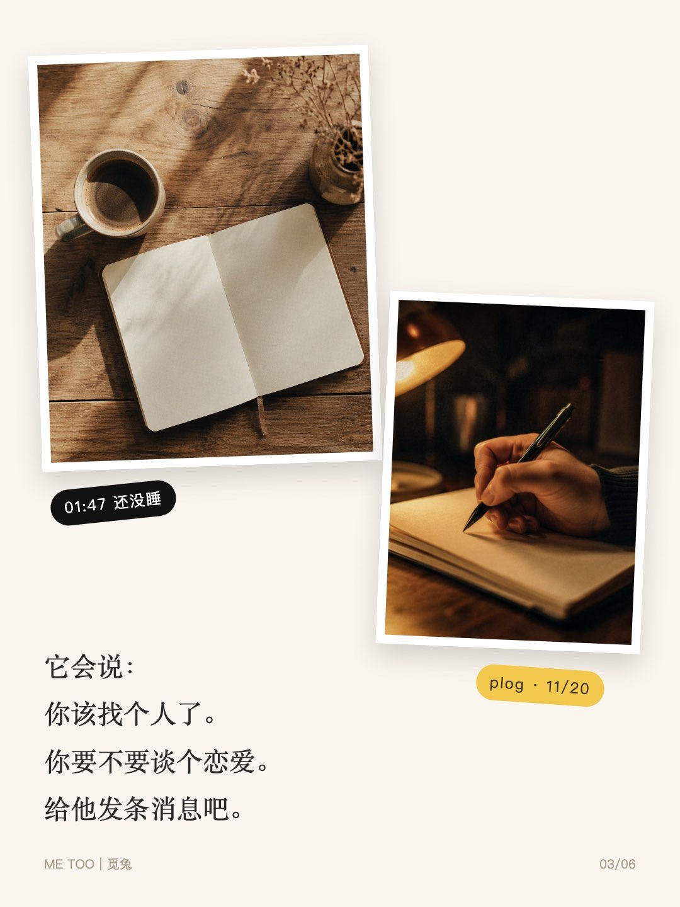
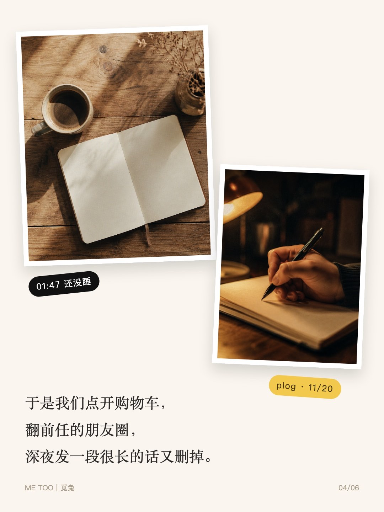
身体比记忆可靠
参考笔记与拆分依据
- 视觉风格：小红书模板（共 12 种形态，用于 A/B 测试）- 内容类型：身体主题
- 为什么单独拆成一篇：「身体比记忆可靠」是原文的世界观支点，也是她区别于普通情绪博主的认知底座。
> 数据为 2026-11-11 采集时快照；赞/藏/评为自然流量笔记，不是投放数据。
参考 1：《我读书，我锻炼，但为什么还是空虚》｜赞 52,130 / 藏 30,210 / 评 3,070
- 链接：https://www.xiaohongshu.com/discovery/item/67c29ba000000000290398ee
- 借鉴：它把‘空虚’归因到‘没有输出/没有深度链接’。本篇用同一套归因手法，但归因对象换成‘身体’。
参考 2：《天然和人有种疏离感》｜赞 10,535 / 藏 2,869 / 评 588
- 链接：https://www.xiaohongshu.com/discovery/item/6a9c23a7000000001001dbb1
- 借鉴：评论区大量在讲成长经历与身体记忆。本篇借这个‘从感受回到身体’的方向。
记忆是会骗人的。
它会美化，会删掉难堪的部分，会把某一年压缩成一句话。
所以每次回忆，我都不太确定那是真的发生过，还是我后来讲给自己听的版本。
身体不一样。
它记得我熬夜的那几年——现在一累就偏头痛。
它记得我不吃饭的那阵子——胃到现在都不太能受凉。
它记得我硬撑过的那些时候——肩膀一直是紧的。
它不会讲故事，但它从不撒谎。
所以我不太敢再用几个瞬间否定自己。
那些年我是怎么过来的，不是靠回忆证明的，是靠这副身体记着的。
它陪我闯过了这么些年。
我至少该对它好一点。
你的身体，替你记得什么？
它会美化，会删掉难堪的部分，会把某一年压缩成一句话。
所以每次回忆，我都不太确定那是真的发生过，还是我后来讲给自己听的版本。
身体不一样。
它记得我熬夜的那几年——现在一累就偏头痛。
它记得我不吃饭的那阵子——胃到现在都不太能受凉。
它记得我硬撑过的那些时候——肩膀一直是紧的。
它不会讲故事，但它从不撒谎。
所以我不太敢再用几个瞬间否定自己。
那些年我是怎么过来的，不是靠回忆证明的，是靠这副身体记着的。
它陪我闯过了这么些年。
我至少该对它好一点。
你的身体，替你记得什么？
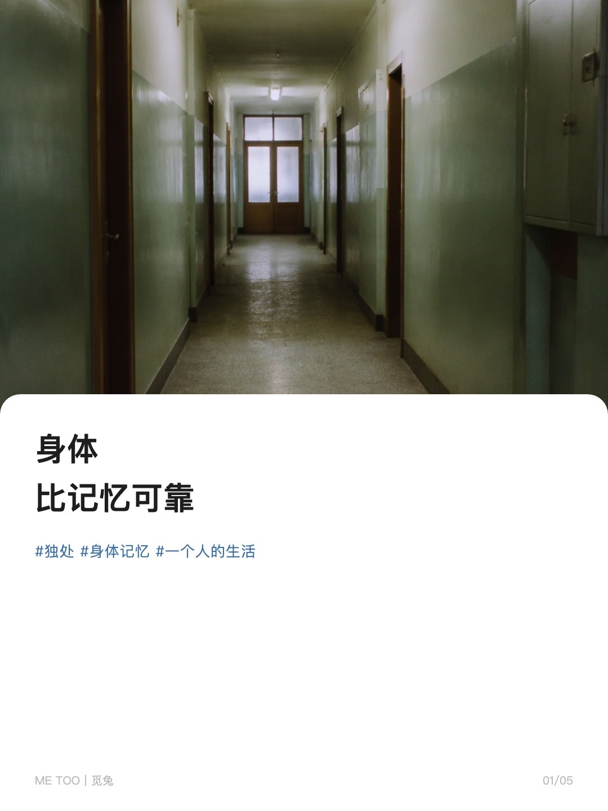
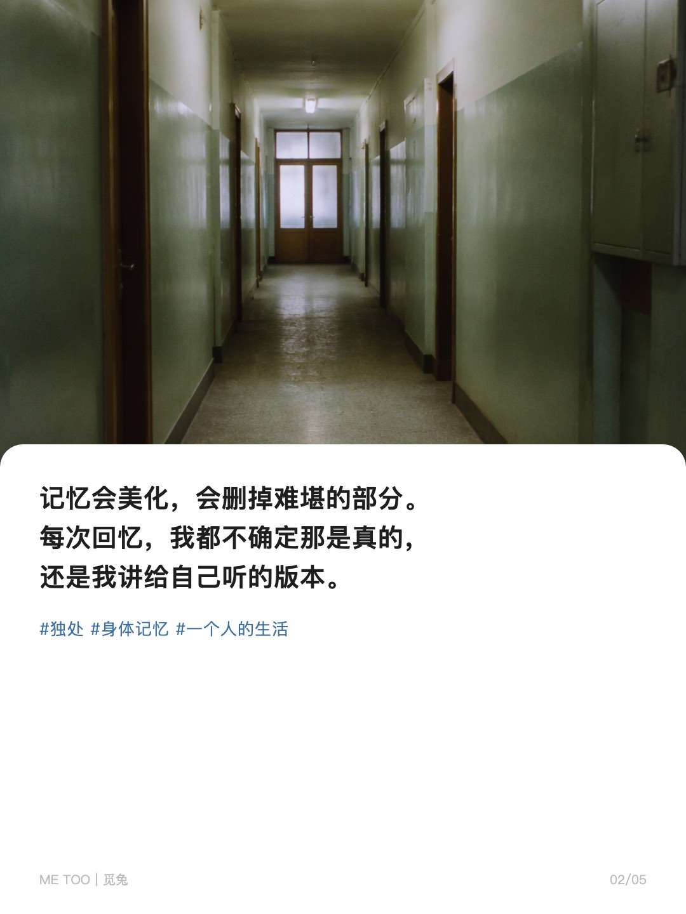
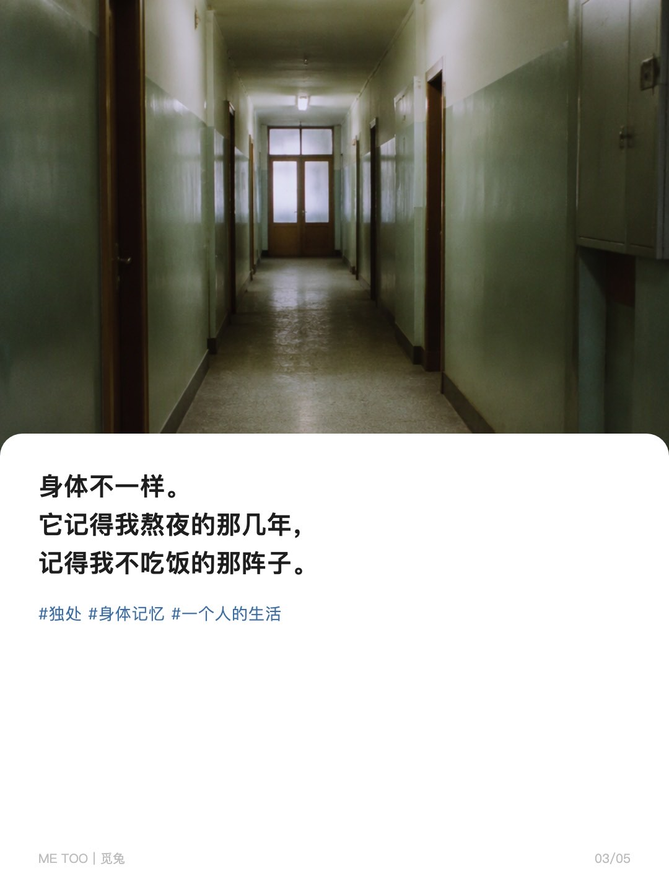
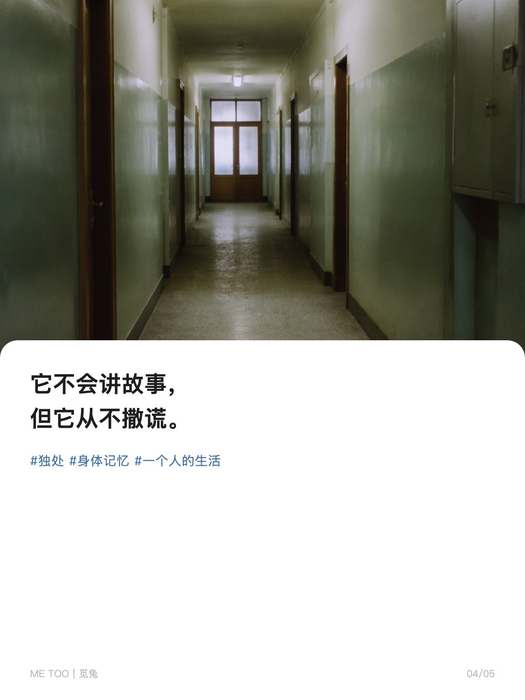
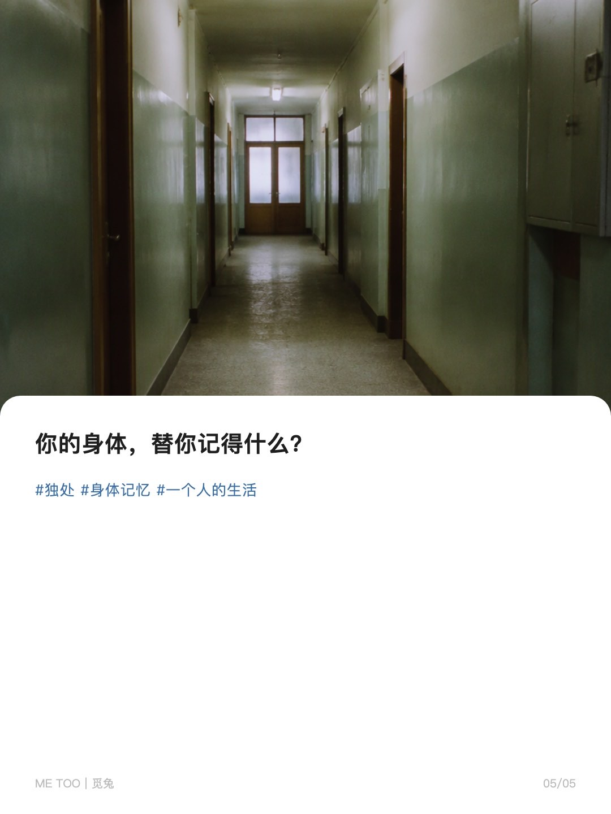
我们不是不会表达，是语言本来就不够用
参考笔记与拆分依据
- 视觉风格：票根（共 12 种形态，用于 A/B 测试）- 内容类型：元话题
- 为什么单独拆成一篇：原文对‘语言无法准确表达’的自省，可以独立成一篇关于表达本身的元内容。
> 数据为 2026-11-11 采集时快照；赞/藏/评为自然流量笔记，不是投放数据。
参考 1：《我的爱是一场，寂寞的游戏》｜赞 62,294 / 藏 19,932 / 评 1,815
- 链接：https://www.xiaohongshu.com/discovery/item/6aae13020000000025034a07
- 借鉴：标题本身像一句诗，靠语感而非信息取胜。本篇借它的‘句子即标题’写法。
参考 2：《我们都被困在这寂寞的夜晚》｜赞 6,166 / 藏 1,617 / 评 130
- 链接：https://www.xiaohongshu.com/discovery/item/6adde3f8000000002c01569b
- 借鉴：‘被困’这个动词把抽象情绪变成空间感。本篇借它‘用动词给情绪定型’的技巧。
每次想说清楚自己的感受，都会卡住。
"我难受。"
——哪种难受？难过、委屈、空、慌、堵、还是说不上来的那种？
"我有点孤独。"
——是没人陪，还是没被理解，还是没被看见？
语言把连续的感受切成一个个格子。
可感受是连续的，格子是有缝的。
所以每次说完，我都觉得"不是这个意思"。
后来我不再逼自己说准了。
我开始写。
写下来的东西也不一定准，但它留住了。
过一段时间再看，能看见自己当时站在哪里。
表达不是为了说清楚。
表达是为了不让它白白发生。
你有没有一句话，到现在都没说清楚？
"我难受。"
——哪种难受？难过、委屈、空、慌、堵、还是说不上来的那种？
"我有点孤独。"
——是没人陪，还是没被理解，还是没被看见？
语言把连续的感受切成一个个格子。
可感受是连续的，格子是有缝的。
所以每次说完，我都觉得"不是这个意思"。
后来我不再逼自己说准了。
我开始写。
写下来的东西也不一定准，但它留住了。
过一段时间再看，能看见自己当时站在哪里。
表达不是为了说清楚。
表达是为了不让它白白发生。
你有没有一句话，到现在都没说清楚？
不用分享的快乐，也是真的
参考笔记与拆分依据
- 视觉风格：歌词卡（共 12 种形态，用于 A/B 测试）- 内容类型：反常识
- 为什么单独拆成一篇：原文结尾的反转（不用分享的快乐也是真的）适合做反常识型，冲讨论。
> 数据为 2026-11-11 采集时快照；赞/藏/评为自然流量笔记，不是投放数据。
参考 1：《女生一个人的生活 到底能爽到什么程度！！》｜赞 37,203 / 藏 19,262 / 评 949
- 链接：https://www.xiaohongshu.com/discovery/item/6a53d415000000000f031915
- 借鉴：把‘一个人’从可怜翻成‘爽’，收藏率 52%。本篇借它的价值反转结构。
参考 2：《深更半夜独自冲向海底捞，没有孤单，全是属于自己的自由！》｜赞 7,473 / 藏 946 / 评 241
- 链接：https://www.xiaohongshu.com/discovery/item/6a734a38000000000f039800
- 借鉴：标题里直接否定‘孤单’，给正面定义。本篇借它的‘不是A，是B’句式。
看到很好看的晚霞，第一反应是掏手机。
拍完才想起来，不知道发给谁。
那一瞬间我确实失落了一下。
然后我问自己：如果没有人在看，这个晚霞还好看吗？
好看。
它不因为我没人分享就打折。
我后来发现，我会在"没人分享"这件事上给自己扣分。
好像快乐必须被见证，才算数。
可是心跳是真的，惊喜是真的，那口气松下来也是真的。
它们发生在我身体里，不需要观众。
所以现在我允许自己：
看到好看的，先看够，再拍。
拍了不发，也可以。
快乐不需要报销。
你有没有过一个"没跟任何人说，但确实很开心"的时刻？
拍完才想起来，不知道发给谁。
那一瞬间我确实失落了一下。
然后我问自己：如果没有人在看，这个晚霞还好看吗？
好看。
它不因为我没人分享就打折。
我后来发现，我会在"没人分享"这件事上给自己扣分。
好像快乐必须被见证，才算数。
可是心跳是真的，惊喜是真的，那口气松下来也是真的。
它们发生在我身体里，不需要观众。
所以现在我允许自己：
看到好看的，先看够，再拍。
拍了不发，也可以。
快乐不需要报销。
你有没有过一个"没跟任何人说，但确实很开心"的时刻？